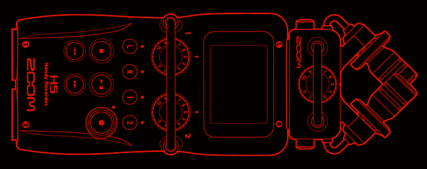

Table of contents
Standard Formats for Data Collection and Archiving

Last updated: 09 November 2021
Standard formats for archiving with PARADISEC
The tables below contain the file formats we accept from depositors and the final formats that go into the archive. If you have a format other than those listed, please contact us so we can advise you on what can be done.
| Media | Media formats PARADISEC will accept |
|---|---|
| Audio | .wav, .aiff, .m4a .mp31 (96khz, 24bit is our archival target; however 48khz, 24bit, or as close to the archival standard as possible will be accepted) |
| Video | .mts (AVCHD), .avi, .mov, .m4v, .dv, .mpg1 |
| Images 2 | .tif, .jpg, .png, .CR2 |
| Text | .txt, .xml, .html, .pdf, .rtf OpenOffice formats (odf, odt etc) (.doc/.docx should be converted to .rtf/.pdf, .xls/.xlsx to .csv prior to submission) |
| Annotations | .eaf, .cha, .xml, .txt, .srt, .trs, .TextGrid |
| Lexicons | .xml, .txt , .pdf, .fwbackup3 (containing no media files) |
| Media | Target formats PARADISEC creates and archives |
|---|---|
| Audio | Archival copy: .wav (96kHz, 26bit) |
| Access copy: .mp3 | |
| Video | Archival copy: .mxf (lossless JPEG2000) |
| Access copy: .mp4 (H.264) | |
| Images | Archival copy: .tif (400dpi) |
| Access copy: .jpg | |
| Text | Archival and access copies: Same as original (see accepted formats above) |
| Annotations | Archival and access copies: Same as original (see accepted formats above) |
| Lexicons | Archival and access copies: Same as original (see accepted formats above) |
1 If you have files such as .mp3 (audio) or .mpg (video), we will certainly accept them; however, if you are collecting new recordings, please avoid these formats, as they are lossy, compressed formats. Look at the following section for capture suggestions
2 If you choose to scan, rather than photograph your notes: Colour option: 300 dpi, scanning ratio: 100%, 8 bits per channel RGB, embedded ICC colour profile encouraged, OCR6 encouraged (PDF or PDF/A complies). Grayscale options: See the National Archives of Australia recommendations here For photographic negative or slide scans TIF, 600 dpi, 4000 pixels on the longest side, 48 bit colour RGB or 16 bit grayscale.
3 Fieldworks (FLEx) files need to be exported to xml (one for the lexicon and one for the text). If you have bundled sound and image files into the FLEx project, they need to be separated as they are typically not in an archival format. We can archive a fwbackup file if it contains only text in xml format (its native format) , but not if it contains audio and images.
Processing your own media
If you would like to save money (see PARADISEC’s page on Costing a deposit) or speed up the archiving process, you may provide us with audio files that are already sampled to 96kHz/24bit or video files that are .mp4 (H.264 codec), you can refer to the following pages: Audio processing and Video Processing using FFmpeg.
Suggestions for audio recorders and video cameras
Audio recorders: Suggested models and recording settings
| Audio recorders | Features |
|---|---|
| Zoom H4 Pro Link | 44.1/48/96kHz, 16/24bit WAV; internal X/Y stereo mic, 2 XLR external mic inputs (with phantom power), powered by 2 AA batteries or USB, records to SD/SDHC cards |
| Zoom H2N Link | 44.1/48/96kHz, 16/24bit WAV; 3.5mm external mic input plus internal X/Y stereo, 2-channel and 4-channel surround, powered by 2 AA batteries or USB, records to SD/SDHC cards |
Suggested audio settings
NOTE: Avoid recording in compressed formats.
- Select a high sampling rate to ensure good capture of speech. A minimal choice would be to capture 48kHz, 16bit. Our archival target is 96kHz, 24 bit, but this could create file sizes that are too unwieldy for use in remote field sites with limited storage and limited access to power for file transfer and processing on laptop.
- Try to collect audio tracks that are no longer than 1 hour each. This avoids having extremely large files. If your audio file becomes larger than 2GB after archival resampling has occurred (96kHz, 24bit, stereo), the archive may need to segment your files into smaller chunks. Keeping the recording to just under 1 hour will also allow you to make sure your tracks are getting successfully written to the SD card, thus avoiding the loss of a large recording. (Zoom recorders will not write the current track if the batteries die mid-recording. You will lose that data). Having recording sessions last no more than 1 hour will also introduce breaks for you and your consultants, avoiding task fatigue.
- Use high quality microphones and make sure if they need to draw power, that you have checked the batteries of the microphones, or if they do not have their own power sources, that you enable phantom power on the Zoom recorders.
Video recorders: Suggested models and recording settings
| Video recorders | Features |
|---|---|
| Canon XA50 Link | records .mp4 & .mxf, (1) 3.5mm and (2) XLR mic inputs (using attached handle), infrared, image stabiliser, optical zoom 20x, records to (2) SD card slots, weighs 960g (or 1435g w/ handle), records 25 and 50fps with slow & fast motion settings, white balance |
| Canon Legria HF G50 Link | records .mp4, (1) 3.5mm mic input, has Night Scene filter, image stabiliser, optical zoom 20x, records to (2) SD card slots, weighs 735g, records 25 and 50fps, with slow & fast motion settings, white balance |
Suggested video settings
NOTE: Avoid recording in compressed formats.
- If you can, select the .mp4 (H.264) recording format with Advanced Audio Coding (AAC). This is a standard format and is well supported.
- Record progressive formatted video (p), rather than interlaced (i)
- A good resolution setting is the full HD setting of 1080p: WIDTH 1920 pixels x HEIGHT 1080 pixels. This gives you the aspect ratio of 16:9. Other settings include: a mid-range definition of 720p: 1280x720 with a 16:9 aspect ratio. A standard definition resolution of 480p: 640x480 with the aspect ratio of 4:3.
- Avoid using 50 or 60 frames per second (fps) unless you are intentionally wanting to create a slow-motion effect. A good setting would be 25 or 30 fps for something that looks like broadcast TV, 24 fps for a more cinematic look. 50 or 60 fps will look hyper-realistic (the soap opera effect). You could also have difficulty syncing audio from external audio recorders if you use 50 or 60 fps.
- Use external microphones for increased quality. Wireless lapel mics or hyper-directional “shotgun” video mics can get you “closer” to the sound and you can add wind protection to those
- Avoid surround-sound audio settings for the camera. This will add unecessary audio tracks and will introduce problems for later processing.
- Try to avoid recording a video that is longer than 1 hour. Keeping your video recording track to 1 hour or less will keep the file size more manageable. Also, when transcoding to archival formats, your file may become too large to archive without segmenting into smaller chunks. Having recording sessions last no more than 1 hour will also allow you to have breaks for you and your consultants, avoiding task fatigue.
Additional Resources
Seyfeddinipur, Mandana. & Rau, Felix. (2020). Keeping it real: Video data in language documentation and language archiving. Language Documentation & Conservation, vol. 14.
Federal Agencies Digitization Guidelines Initiative (FADGI). (2014). Creating and Archiving Born Digital Video, Part III: High Level Recommended Practices. The FADGI Audio-Visual Working Group, v1.1, 2 December 2014.
⬆️ Back to top